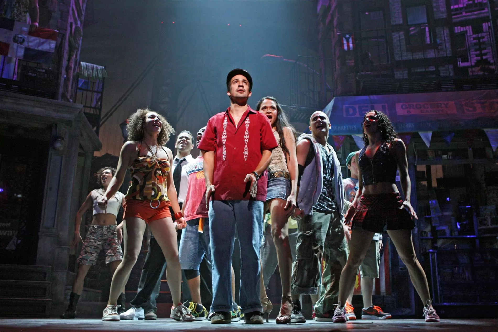
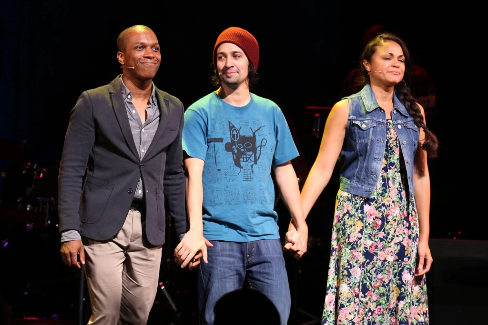
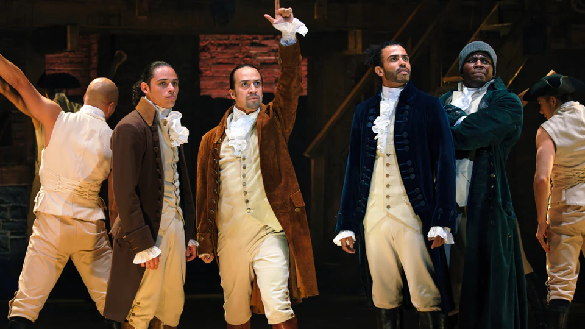

Biografía
Nacido el 16 de enero de 1980, en Nueva York, Nueva York, Lin-Manuel Miranda es un actor, compositor, letrista y escritor estadounidense que creó y protagonizó producciones teatrales que combinan formas musicales modernas con el teatro musical clásico.
Lin-Manuel Miranda es considerado por muchos como uno de los genios de la industria del entretenimiento de este siglo: el compositor, arreglista, coreógrafo, actor, director, productor y dramaturgo ha brillado en cada aspecto de su carrera. Nacido en el barrio ultra latino Washington Heights del Bronx, Nueva York, ha sido merecedor de más de 40 reconocimientos por su excelencia artística: algunos premios obtenidos son un Pullitzer, 3 Tony, 3 Grammys, 2 Emmys, 2 Olivier, un Genius Gran y la estrella en el Paseo de la fama de Hollywood.
Musicales más importantes
In the Heights
La historia de un dominicano americano que sueña con vivir en las playas del Caribe ha tenido la participación de Lin-Manuel Miranda en varios momentos: como su protagonista en Broadway, escritor de las canciones originales de la versión teatral, protagonista de multiples funciones por todo Estados Unidos, productor ejecutivo de la película de 2021.
Tick Tick Boom
Al igual que en In The Heights, Lin-Manuel ha participado en Tick Tick Bom en varios momentos: En 2014 fue el protagonista del famoso musical teatral basado en la historia de Jonathan Larson. Siete años después la película fue llevada al cine de la mano de Netflix y en ella Lin fue el director y productor ejecutivo. Esta película marcó su debut como cineasta.
Hamilton
Es el proyecto más premiado de Miranda hasta la fecha: allí fue el creador de la música, las canciones y la historia que se muestra en las tablas, pero que fue inspirada por el libro Alexander Hamilton. Fue el ganador de un Pullitzer y por la obra recibió un sinfin de reconocimientos gubernamentales.
Encanto
En 2021 se estrenó la película de Disney que tiene lugar en un pueblo mágico de Colombia: allí Lin-Manuel fue contratado para componer la letra de todas las canciones y ser el director musical de todos los números. Los temas principales de la película fueron Colombia, Mi Encanto, Dos Orugüitas, Surface Pressure y We Don't Talk About Bruno.